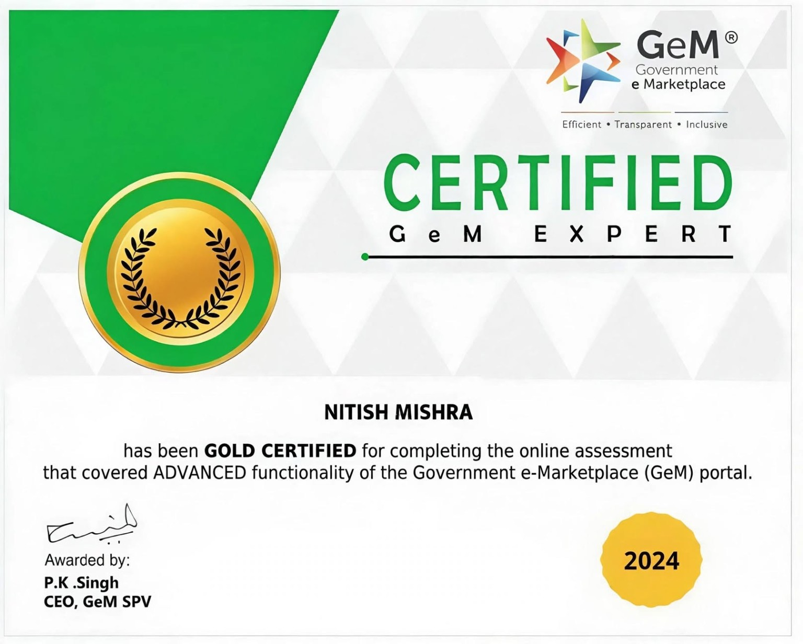
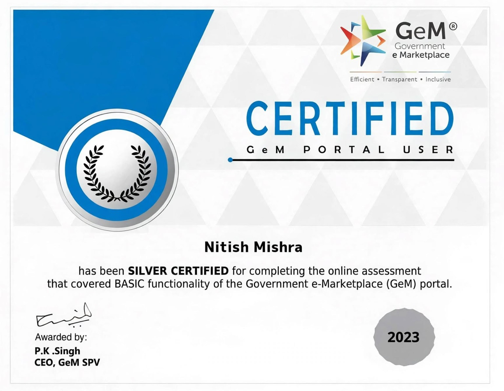
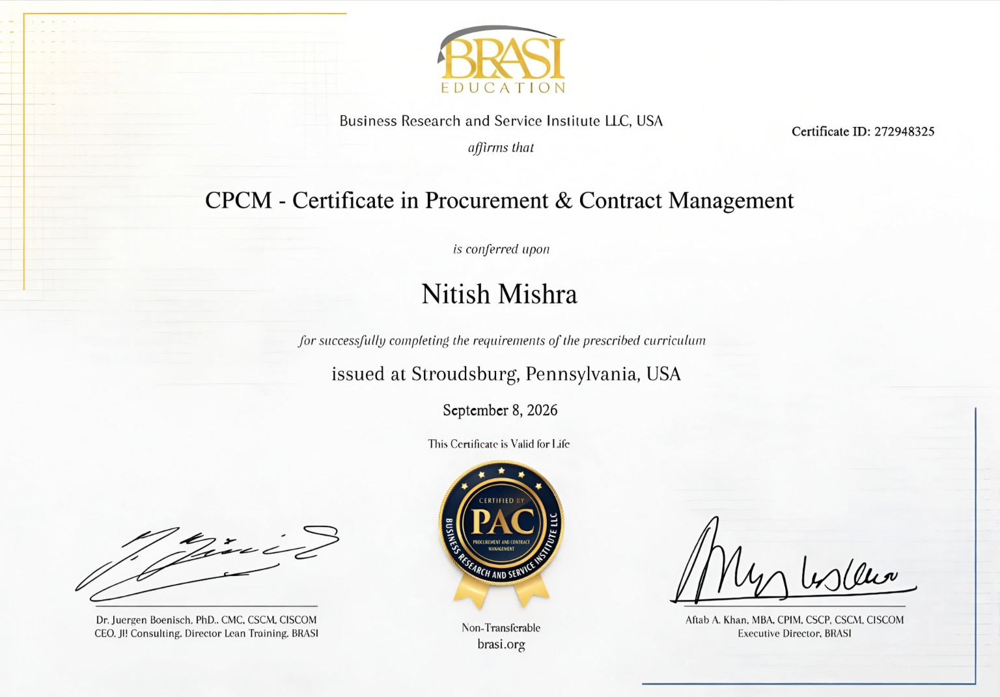
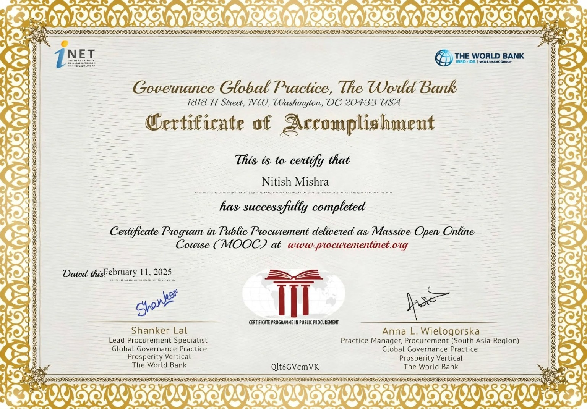

Eligibility
Can the organisation meet the prescribed qualification and experience requirements?
Strategic bid management for GeM, Government, PSU and institutional e-procurement — from Go/No-Go screening and tender compliance to costing, documentation and final submission.
Don’t confuse bid volume with bid quality. Don’t confuse winning an order with winning a profitable contract.
Before committing time, resources and commercial margin, a business needs to understand whether the opportunity is actually worth pursuing.
Can the organisation meet the prescribed qualification and experience requirements?
Can the technical, documentary and tender-specific conditions be satisfied?
What will manpower, statutory obligations, operations and other tender-specific costs actually require?
Is the opportunity commercially sensible within the organisation's operating limits?
Can the complete bid be prepared, reviewed and submitted correctly within the prescribed timeline?
A low bid price does not automatically create a sustainable contract.
In service procurement, commercial decisions can involve statutory wage obligations, manpower deployment, contractual conditions, operational overheads and tender-specific costs. Competitive pricing therefore needs to be understood alongside compliance and execution feasibility.
Eligibility, technical specifications, ATC/STC, documentation and service requirements.
Minimum wages, statutory components, manpower deployment, operating costs and tender-specific commercial elements.
The objective is not simply to quote low; it is to understand the commercial limits within which the contract remains viable.
From the first tender document to the final submission, every stage has a purpose.
Assess eligibility, scope, experience requirements, resource fit, commercial feasibility and submission effort before committing to the bid.
Build the submission around the actual tender requirement and verify the details that can make or break bid readiness.
Coordinate costing, documents, portal preparation, final checks, submission and post-bid requirements.
Hands-on bid management across service procurement and multi-portal e-procurement environments.
Opportunity screening, RFP/NIT analysis, eligibility, technical and financial bid preparation, online submission and post-bid coordination.
GeM Services, Custom Bids, ATC/SLA requirements, Reverse Auctions and government, PSU, banking and state/departmental portals.
Central/State Minimum Wage revisions, EPF, ESIC, Bonus, BOQs, rate calculations and dynamic financial estimates.
Pre-submission checks covering eligibility, tender conditions, documentation and applicable tender-specific statutory or licensing requirements.
Practical experience with online competitive bidding and commercial coordination in GeM and other e-procurement environments.
Security Services, Outsourced Manpower and Housekeeping, with additional Cash Van exposure across institutional procurement.
Portal mechanics differ, but the fundamentals remain: understand the requirement, protect compliance and submit accurately.
Services • Custom Bids • ATC / SLA • Reverse Auctions
GeM Gold Certified — Advanced FunctionalityTender documentation • Technical requirements • E-tender submission
Practical exposure to railway procurement environmentsCentral & state e-procurement • Departmental workflows • Online submission
Government, PSU and banking procurement exposureTechnical proposals • Commercial documentation • Requirement analysis
Service-sector and institutional procurement experienceEspecially relevant to service businesses moving from routine opportunities toward more structured tender participation.
For businesses pursuing larger security-service contracts with detailed manpower and compliance requirements.
For agencies dealing with statutory costing, deployment requirements and complex tender conditions.
For service providers looking to participate more confidently in institutional opportunities.
For businesses with operational capability that want a more disciplined approach to government and PSU tenders.
For organisations seeking experienced bid support across complex or high-value opportunities.
My professional journey covers both sides of the procurement process — beginning with departmental tender administration and moving into end-to-end bidder-side tender management.
Independently manage the organisation's dedicated tendering and bid-management function across Government, PSU, banking and institutional procurement.
Supported departmental tender administration including tender estimates, BOQ, NIT, tender documentation, web-portal publication, bid-submission processes for empanelled contractors, Comparative Statements, Award Letters and official correspondence.
Data entry, documentation, indexing/filing and e-TDS return support.
Successfully secured in FY 2021–22 — the largest individual tender of my career.
Single tender value • not cumulativeSelected credentials relevant to procurement, GeM, bid management and professional development.

Advanced Functionality · Government e-Marketplace

Basic Functionality · Government e-Marketplace

Certificate in Procurement & Contract Management (CPCM)

The World Bank / Public Procurement Programme
Alison · Bid management fundamentals
Essential Skills & Competencies · SCMDOJO Academy
These are designed as original insight topics — not promises of outcomes, but useful frameworks for businesses navigating competitive procurement.
Eligibility → Compliance → Documentation → Conditions → Pricing → Submission.
Price matters, but eligibility, technical compliance and tender conditions matter too.
A practical perspective for MSEs and growing service businesses.
Documentation, eligibility, technical compliance, commercial errors and submission mistakes.
A practical look at how eligibility, compliance, documentation and competitive positioning shape a credible bid.
How growing service businesses can build capability, experience and bid discipline for larger opportunities.
Bachelor of Commerce — CSJMU, 2008
Post Graduate Diploma in Journalism & Mass Communication — UPRTOU, 2011
Professional remarks, collaboration feedback and recommendations are welcome. Submissions are received privately and may be considered for publication only with permission.
A focused review can help surface missing documents, eligibility gaps, inconsistent information, overlooked tender conditions or commercial calculation issues before submission.
Analyse the requirement. Protect compliance. Build the numbers. Submit with confidence.
Audit My Bid ↗